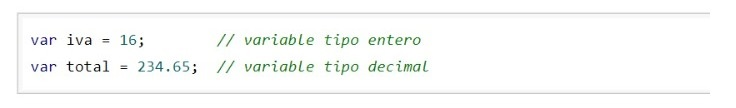
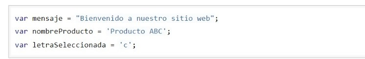
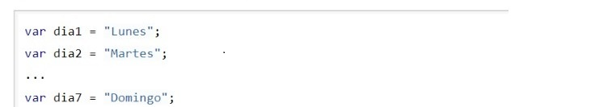

Variables de JavaScript
Todas las variables de JavaScript se crean de la misma forma (mediante la palabra reservada var), la forma en la que se les asigna un valor depende del tipo de valor que se quiere almacenar (números, textos, etc.) Numéricas. Se utilizan para almacenar valores numéricos enteros o decimales. En este caso, el valor se asigna indicando directamente el número entero o decimal.
Cadenas de Texto. Se utilizan para almacenar caracteres, palabras y frases de texto. Para asignar l valor a la variable, se encierra el valor entre comillas dobles o simples
Los arrays se les llama vectores, matrices e incluso arreglos. No obstante, el termino array es el mas utilizado y es una palabra comúnmente aceptada en el entorno de la programación.
